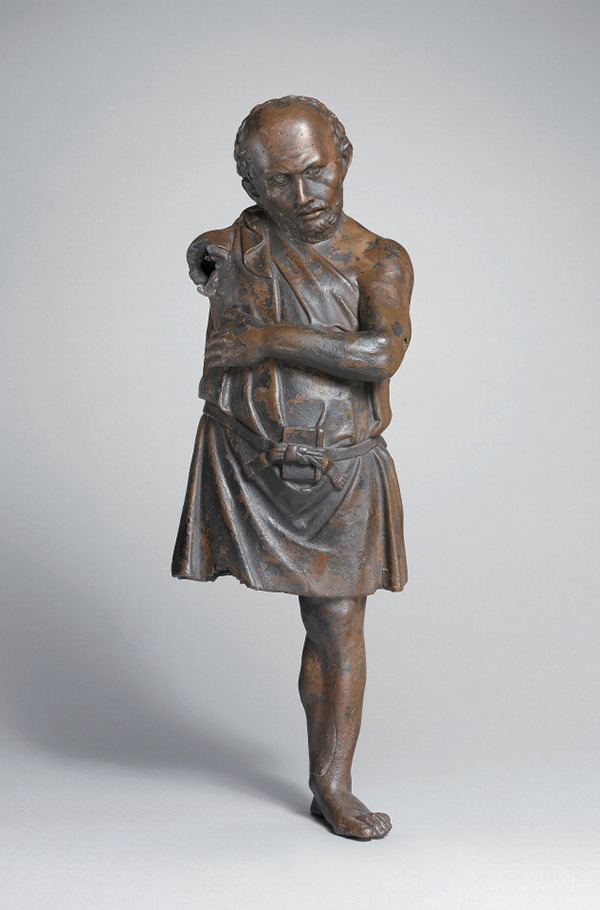
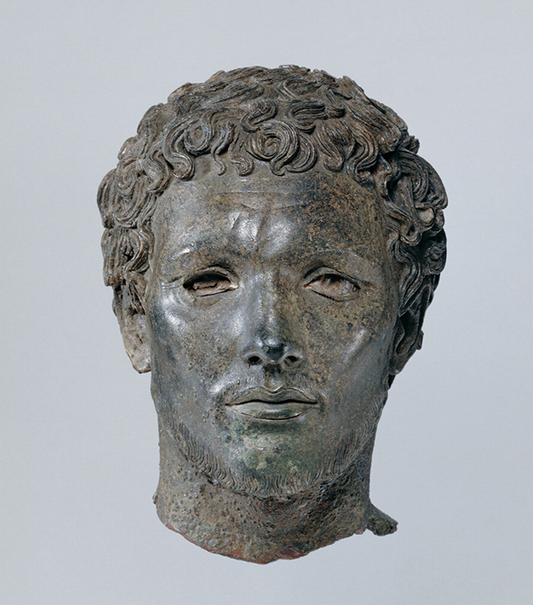
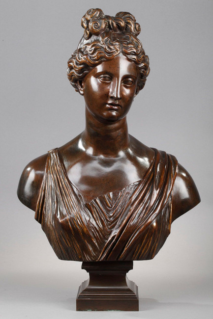
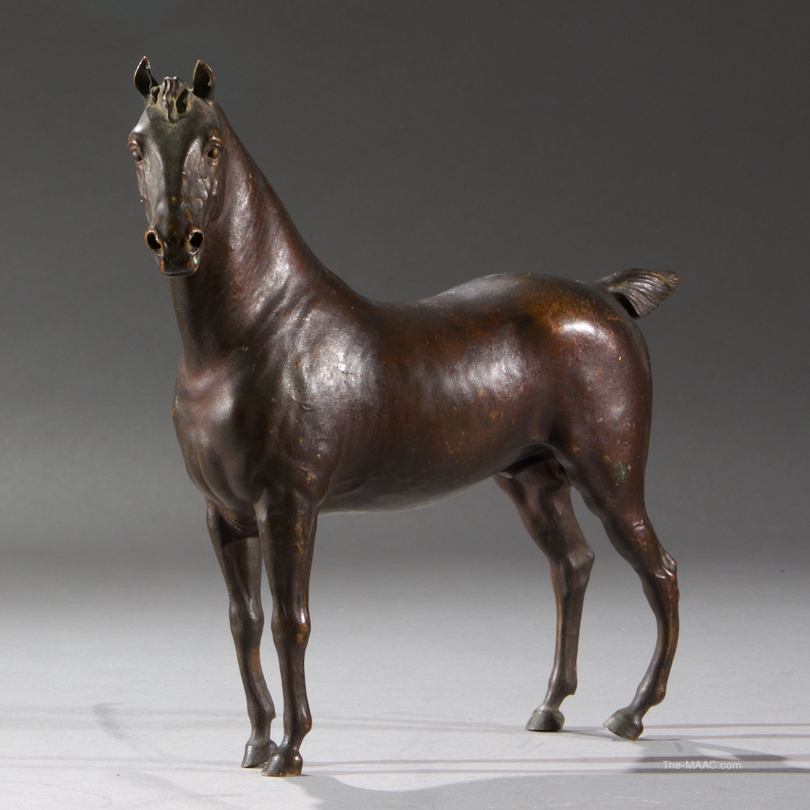

<
Gallery of Images containing the color antique bronze

Artisan, middle of the 1st century B.C., found in Cherchell, Tipaza, Algeria. Bronze with inlaid silver, 15 7/8 in. high. The Metropolitan Museum of Art, Rogers Fund, 1972 (1972.11.1). Image © The Metropolitan Museum of Art/Scala, Firenze

Portrait of a Man, about 100 B.C., found in Delos, Greece. Bronze, white paste, and dark stone, 12 13/16 in. high. The Hellenic Ministry of Culture, Education and Religious Affairs. The National Archaeological Museum, Athens, inv. X 14612. Photo: Marie Mauzy / Art Resource, NY

Bronze bust of a woman dressed in antique style. Her wavy hair is pulled back into two buns, one of which is shaped like a knot. Her face is treated like an antique statue. It's probably a copy after the Antique in the neo-classical style. She wears a tunic attached to her right shoulder by a medallion. The bust rests on a pedestal. The founder's stamp"Devee Fondeur" is affixed to the back. This is a work of the French school circa 1900.

Antique Bronze Horse Sculpture.